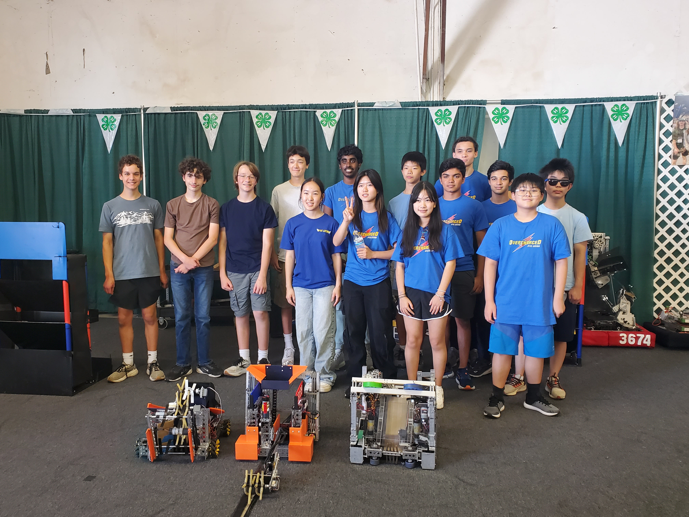

We helped Jake by making custom parts for his van. From this we learned how to use the engineering design process for real-world custom projects with unique constraints. This increased our attention to detail and process while working on our own robot, and helped Jake with work he couldn't do alone.
We set joined two other teams at the Clark County Fair in Washington, and we showed off our robot and spread info about FIRST and ORTOP. We learned the best ways to market our team while broadcasting STEM learning to the community in collaboration with others. This inspired young kids to involve themselves in robotics and other STEM fields and gave them resources to easily do so.